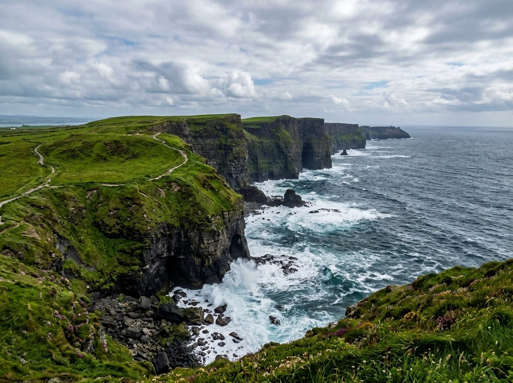
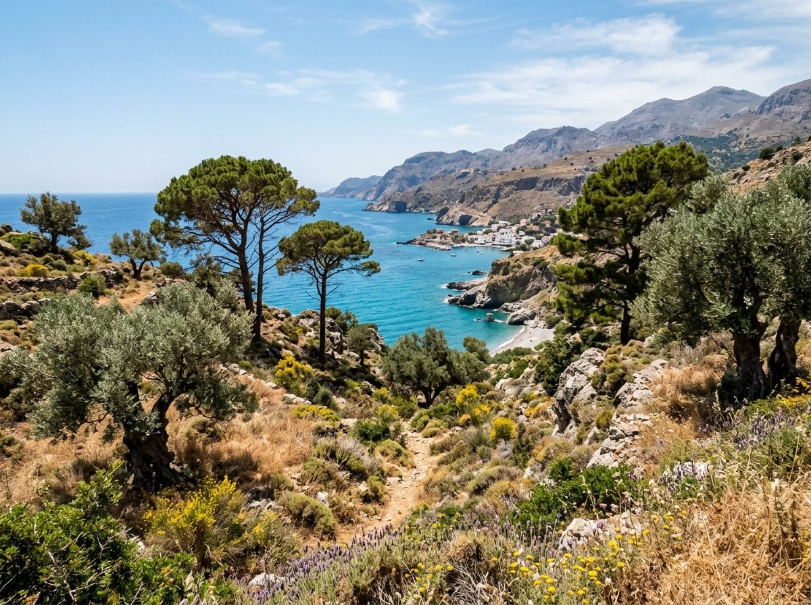
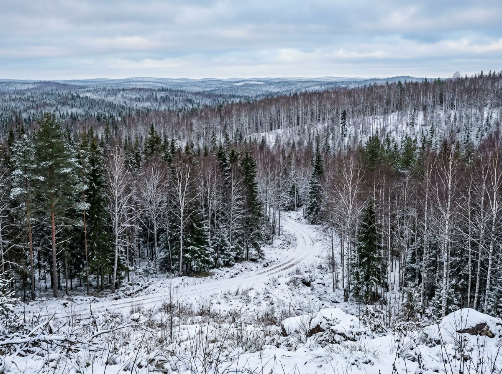
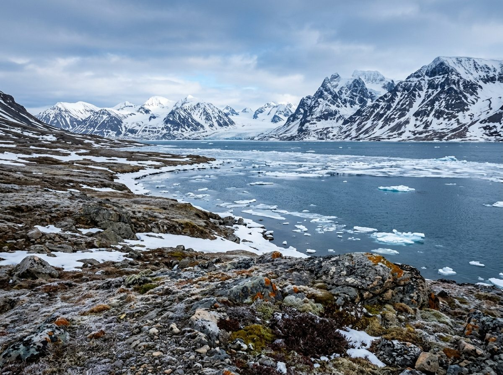
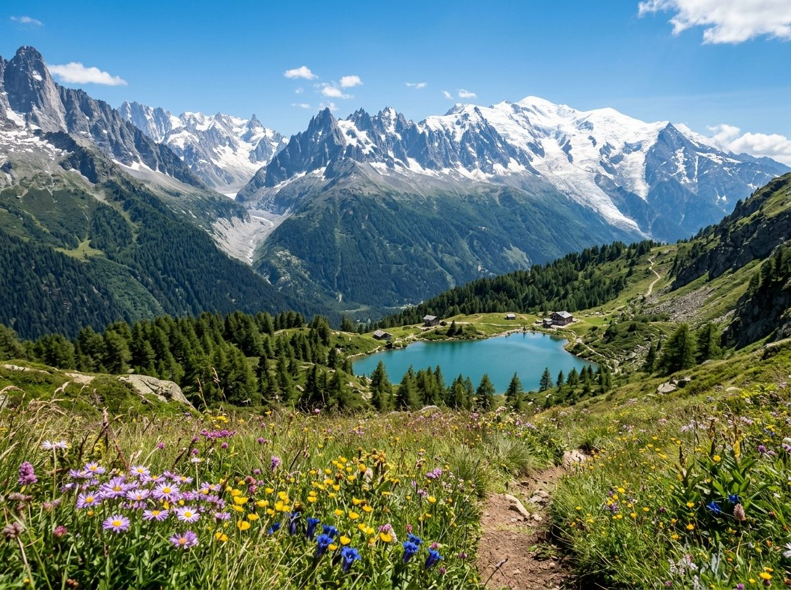

Localisation : Façade ouest de l'Europe (Irlande, Belgique, France de l'ouest, Royaume-Uni...).
Caractéristiques : Hivers doux (gelées rares) et étés frais sous l'influence constante de l'océan Atlantique. Les précipitations sont fréquentes et régulières toute l'année (pluie fine). Il n'y a pas de saison sèche.
🔍 Indice Graphique : La courbe des températures (ligne rouge) est très douce et aplatie (elle reste toujours au-dessus de 0°C et ne dépasse pas 17°C). Les barres de précipitations (bleues) restent de hauteur moyenne et homogène tous les mois.

Localisation : Sud de l'Europe (Espagne, Italie, Grèce, pourtour de la Méditerranée...).
Caractéristiques : Hivers très doux et pluvieux, et étés particulièrement chauds et secs. La végétation est adaptée au manque d'eau estival (garrigue, oliviers, pins parasols).
🔍 Indice Graphique : C'est le seul climat avec un grand « creux » de sécheresse en été : les barres bleues s'effondrent presque à zéro en juillet-août et passent loin en dessous de la ligne rouge de température.

Localisation : Centre et est de l'Europe (Pologne, Ukraine, Roumanie...), loin de la mer.
Caractéristiques : Les contrastes de température sont très marqués (forte amplitude thermique). Les hivers sont longs, glacials et enneigés, tandis que les étés sont chauds et orageux.
🔍 Indice Graphique : La ligne rouge de température passe en dessous de la barre des 0°C pendant les mois d'hiver (décembre, janvier, février). Les pluies (barres bleues) sont nettement plus hautes en été (juin à août) qu'en hiver.

Localisation : Extrême nord de l'Europe (nord de la Scandinavie, Islande, Svalbard...).
Caractéristiques : Hivers glacials et extrêmement longs. Étés très courts et très froids (la température moyenne dépasse à peine 10°C au mois le plus chaud). Les précipitations y sont globalement faibles.
🔍 Indice Graphique : La ligne rouge de température reste aplatie tout en bas du graphique : elle passe plus de la moitié de l'année sous 0°C, et son sommet en juillet reste très bas (autour de 11°C).

Localisation : Massifs de haute altitude (Alpes, Pyrénées, Carpates...).
Caractéristiques : Les températures baissent rapidement avec l'altitude. Les hivers sont longs, glacés et très enneigés, tandis que les pluies et neiges restent abondantes toute l'année.
🔍 Indice Graphique : La courbe de température (rouge) ressemble à celle du climat continental (elle descend sous 0°C en hiver), mais les barres de pluie (bleues) sont géantes (très hautes, souvent supérieures à 100 mm tous les mois).